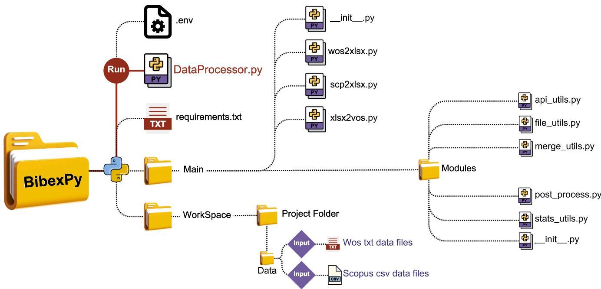
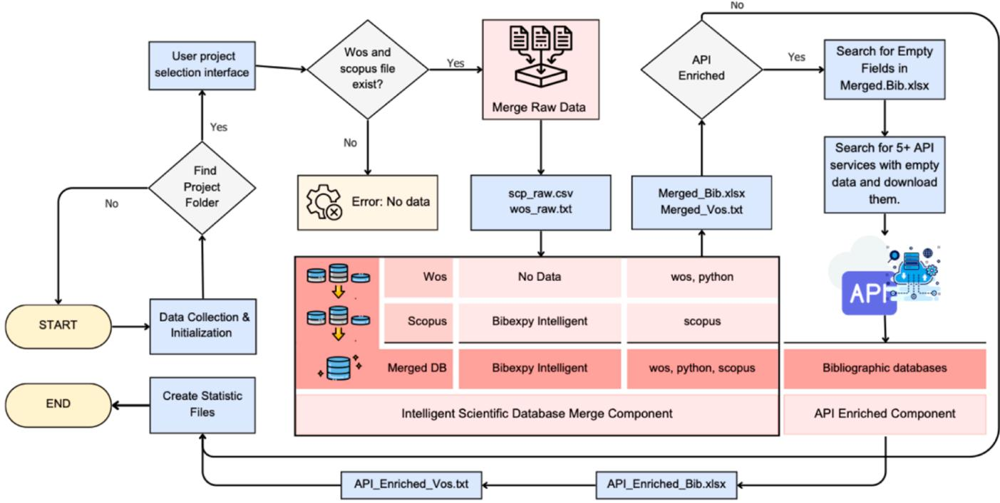

BibexPy: Harmonizing the bibliometric symphony of Scopus and Web of Science¶

Burak Can Kara a, Alperen S¸ ahin b, Tas¸kın Dirsehan c,d,e,*
a Department of Construction, Merzifon Vocational School, Amasya University, Amasya, Türkiye
b Institute of Social Sciences, Marmara University, ˙Istanbul 34722 Türkiye
c Faculty of Business Administration, Marmara University, Istanbul 34854 Türkiye
d School of Social and Behavioral Sciences, Erasmus University, Rotterdam, the Netherlands
e LDE Centre for BOLD Cities, Rotterdam, the Netherlands
A R T I C L E I N F O¶
Keywords: Bibliometric analysis tool Automated data integration Metadata enrichment software Scikit-learn Machine learning API-Based metadata processing
A B S T R A C T¶
Bibliometric analyses frequently encounter issues such as duplicate records, missing metadata, and inconsistent formats, reducing reliability and efficiency. Existing solutions offer minimal assistance for automated data integration and enrichment, requiring researchers to rely on manual efforts. This paper presents a Python-based software solution that addresses these challenges by merging datasets from Scopus and Web of Science, performing DOI-based deduplication, and enhancing metadata using APIs such as Unpaywall and Semantic Scholar. BibexPy provides analysis-ready formats that work with VosViewer and Biblioshiny, minimizing human labor and enhancing data quality. It enables advanced analysis like as co-citation mapping and trend identification, promoting innovation in bibliometric research approaches.
1. Metadata¶
| Nr | Code metadata description | Metadata |
| C1 | Current code version | BibexPy Hydrogen v1.0.0 - Initial Release |
| C2 | Permanent link to code/repository used for this code version | https://github.com/bcankara/BibexPy |
| C3 | Permanent link to reproducible capsule | None |
| C4 | Legal code license | GNU General Public License (GPL) |
| C5 | Code versioning system used | git |
| C6 | Software code languages, tools and services used | python |
| C7 | Compilation requirements, operating environments, and dependencies | python-dotenv (v1.0.0), pandas (v2.0.0), openpyxl (v3.1.2), numpy (v1.24.0), requests (v2.31.0), scikit-learn (v1.3.0), scipy (v1.11.0), tqdm (v4.65.0), xlrd (v2.0.1), xlsxwriter (v3.1.0), python (v3.9 or +) |
| C8 | If available, link to developer documentation/manual | http://bibexpy.com/doc |
| C9 | Support email for questions | info@bibexpy.com |
2. Motivation and significance¶
Bibliometric analysis is increasingly being used in scientific research to identify trends, collaborations, and future disciplines [1–7]. Numerous software tools have been developed to facilitate bibliometric mapping and analysis, including widely recognized solutions such as Bibliometrix (Biblioshiny) [8], VOSviewer [9], CitNetExplorer [10], CiteSpace [11], CITation Analysis [12], BibExcel [13], SciMAT [14] ScientoPy [15], and pyBibX [16]. Although these systems have a wide range of capabilities, many fail to handle the essential difficulty of comprehensively integrating bibliometric data from numerous databases.
The Web of Science (WoS) and Scopus databases are among of the most extensively utilized for bibliometric studies [17]. However, when attempting to integrate and analyze data from multiple sources in this manner, numerous challenges arise, including data format discrepancies, missing metadata, and duplicate records. Such issues necessitate manual effort, which might result in inconsistencies and mistakes [18]. Furthermore, differences in database structures make merging problematic. Scopus, for example, employs the "Cited-By" tag field to show author citations, whereas WoS does the same with "Cited-Reference"
[19]. As a result, for these and other reasons, scholars frequently investigate databases independently, which limits the breadth of their research [20].
Using a single citation database for bibliometric analysis can reduce the comprehensiveness and reliability of conclusions. Integrating information from several citation databases, such as Scopus and Web of Science, is critical for obtaining more reliable findings. However, this procedure can be time-consuming, particularly for large datasets, as it frequently necessitates extensive manual work to tackle issues like duplication and standardization [21,22]. Automated procedures for combining data from Scopus and Web of Science provide a streamlined and efficient way to improve bibliometric analysis.
BibexPy is a comprehensive solution designed to address critical challenges in bibliometric data preparation, including dataset integration, deduplication, metadata enrichment, and format conversion. The software seamlessly merges records from Web of Science and Scopus, ensuring consistency across data sources. DOI-based deduplication not only enhances reliability by removing redundant entries but also enriches the dataset during the process by merging complementary information from duplicates. For instance, if one record is missing an author name or contains partial keywords, these gaps are filled by leveraging corresponding data from the duplicate entry. As a result, the deduplication process ensures both the removal of redundancy and the creation of a completer and more enriched dataset. Outputs are generated in formats compatible with tools like VosViewer and Biblioshiny, simplifying downstream analysis. For instance, the relevant information from the deduplicated item is used to fill in the blanks in a record that lacks an author name or has partial keywords. Consequently, the data deduplication process produces a more comprehensive and enhanced dataset in addition to eliminating inaccurate and missing data. In order to facilitate analysis with the preferred tool, outputs are generated in formats that are compatible with analysis programs like VosViewer and Biblioshiny.
This study aims to explain in detail the contributions of BibexPy to bibliometric data preparation processes. First, the architecture and basic functions of the software are examined; then, these functions are discussed in detail. The operation of the software is demonstrated on a sample dataset and the state of the data before analysis is evaluated using the biblioshiny tool. The study also discusses the potential impact of BibexPy on future research and highlights its value for bibliometric
analysis.
3. Software description¶
BibexPy is a Python-based command-line tool designed to automate the preprocessing of bibliometric information obtained from Web of Science (WoS) and Scopus. The software efficiently performs critical activities such as data integration, deduplication, metadata enrichment, and format conversion, resulting in high-quality datasets suitable for complex bibliometric analysis. Fig. 1 depicts BibExPy’s file system layout, showing how the software organizes data inputs, processed files, and outputs within the workspace.
Table 1 provides a comprehensive, step-by-step guide to installing and running BibexPy, making the installation process simple for users of
Table 1¶
Comprehensive installation and usage instructions for BibexPy.
| Step | Description | Command | |
| 1 | Prerequisites | Ensure Python 3.9+ and Git are installed on your system. | |
| 2 | Clone the Repository | Download the BibexPy project from GitHub using Git. | git clone https://github.com/bcankara/BibexPy.git |
| 3 | Navigate to the Directory | Move into the BibexPy project folder. | cd BibexPy |
| 4 | Install Dependencies | Install the required Python packages. | pip install -r requirements. txt |
| For users who prefer a virtual environment (Optional): | |||
| Create | Create a Python virtual environment for isolated dependency management. | python -m venv | |
| Activate | Activate virtual environment | Windows: venv\Scripts\activate Mac/Linux: source venv/bin/activate | |
| 5 | Run the Software | Start BibexPy for bibliometric data processing. | python DataProcessor.py |
| 6 | Guided Workflow | Follow on-screen prompts for project selection, file processing, and optional metadata enrichment. | |

Fig. 1. File system structure of BibexPy.
all technical levels. The combination of a clear file system (Fig. 1) and a detailed installation guide (Table 1) ensures that users can quickly and effectively use BibExPy for their bibliometric research needs.
3.1. Software architecture¶
BibexPy, developed with Python 3.9, uses a number of powerful li braries for processing bibliometric data. The core features of the software are built on libraries such as "Pandas, NumPy, Scikit-learn and Scipy". For environmental variable management and API integration, "requests" and "dotenv" libraries are used. The current version of BibexPy can be run via a command line interface that provides interoperability across multiple platforms without requiring a graphical interface.
Fig. 1 illustrates the software architecture of BibexPy. The software processes bibliometric datasets from Web of Science (".txt") and Scopus (".csv") files by performing various transformations and computations, thereby enriching and improving the datasets. The outputs include a consolidated dataset ("Prefix_Bib.xlsx"), files compatible with VosViewer ("Prefix_Vos.txt"), and statistical summaries. The VosViewer-compatible output format aligns with the original export format of Web of Science, making it suitable for use in other bibliometric analysis software as well (Fig. 2).
The software architecture is made up of several, independent modules for data preprocessing and analysis. The data preprocessing modules perform data augmentation, metadata enrichment, and file format conversion to provide a high-quality dataset, while the analysis modules employ these processed datasets to generate auxiliary files and reports suited for advanced bibliometric tools. This modular approach assures scalability, maintainability, and flexibility, making BibexPy a depend able solution for bibliometric data preparation. The functions of BibexPy are further explored in the sections that follow.
3.2. Data loading and preprocessing¶
The data loading process begins when the user saves Scopus (.csv) and WoS (.txt) files to the Workspace/Data directory. Before beginning the integration and enrichment procedures, the application consolidates these raw datasets. When multiple.csv or.txt files are provided, they are combined into unified files called wos.txt and scopus.csv, which are stored in the merged_raw directory. Upon successive executions with the same data, the user is offered the option of re-merging the raw files or using the previously merged dataset. This methodology not only assures a more efficient preparation workflow, but it also makes the combined raw datasets compatible with other bibliometric analysis tools.
3.3. Pipelines¶
The BibexPy pipeline automates sequential operations for bibliometric data preparation and includes modular components for different processing processes. Each stage in the pipeline improves data quality and makes it compatible with subsequent bibliometric technologies.
3.4. Deduplication and metadata enhanced¶
DOI-based matching is used to identify and delete duplicate entries, together with a procedure known as intelligent merging. This method integrates and consolidates overlapping data from both databases. For example, if the keywords in one database are keyword-1, keyword-2 and in the other keyword-1, keyword-3, the merged output will be keyword-1, keyword-2, and keyword-3. Additionally, for records without DOIs, duplication is eliminated by generating a unique key based on the title and year, with special characters deleted.
3.5. API based metadata enrichment¶
Missing metadata fields such as abstracts, citation counts, and author affiliations are filled in by API connection with sources such as Scopus, Unpaywall, and Semantic Scholar. This component guarantees that datasets are complete and ready for further studies like co-citation mapping and trend analysis.
3.6. Format conversion¶
BibexPy has powerful format conversion tools that generate outputs compatible with popular bibliometric analysis programs like as

Fig. 2. An overview of the software architecture of BibexPy.
VosViewer and Biblioshiny. The software creates files in Excel ("Prefix_Bib.xlsx") and text ("Prefix_Vos.txt") formats, allowing for smooth connection with visualization and analysis tools.
3.7. Performance metrics¶
To evaluate the accuracy and completeness of enriched metadata, we define two key metric categories: completeness metrics and quality status levels. These metrics help assess data coverage, track improvements through enrichment processes, and classify metadata quality based on missing information.
a) Completeness Metrics: Completeness metrics measure how well metadata fields are populated and improved after enrichment. Field Coverage calculates the percentage of non-empty fields, indicating overall metadata completeness. API Enrichment Rate assesses how much the metadata quality improves after integration with external data sources. Merge Success Rate measures the percentage of re cords successfully combined without data loss or duplication. These indicators ensure that metadata enrichment processes effectively enhance data integrity.
b) Quality Status Levels: To classify metadata quality, we define six levels based on the percentage of missing data. Excellent (0% missing data) indicates fully complete records, while Very Good (<1%) represents minor gaps. Good (<5%) is considered acceptable for most analyses, whereas Acceptable (<20%) denotes moderate gaps. Poor (<50%) suggests significant missing information, and Critical (≥50%) indicates unreliable metadata that requires substantial improvement. These quality status levels provide a standardized framework for evaluating the reliability of enriched metadata.
3.8. Statistical reporting¶
The software generates detailed statistical summaries, including:
a) Duplication rates.
b) Metadata completeness ratios.
c) Quality metrics for enriched datasets.
d) API Based Enrichment field, source, value logs.
These reports help users assess the quality and reliability of their processed datasets.
3.9. Automation and workflow¶
The "DataProcessor" class is the primary access point for users, as it defines the pipeline phases and performs the automatic processing of bibliometric datasets. Users start the workflow with a single command:
"python DataProcessor.py".
The pipeline assists users with project selection, optional API enrichment, and data processing. When finished, the outputs are saved in the specified project directory. Users can utilize these results for bibliometric analysis or further processing in programs such as Vos-Viewer and Biblioshiny.
3.10. Time complexity of the framework¶
The time complexity of BibexPy’s framework is influenced by the size of the input datasets and the operations performed, such as dedu plication and metadata enrichment. Key factors affecting time complexity include:
a) Scalability: The pipeline efficiently processes both small and large datasets.
b) API Integration: Metadata enrichment through API calls depends on the response times of external services.
c) Computational Efficiency: BibexPy is optimized for performance using efficient algorithms for deduplication and data transformation.
Overall, BibexPy balances computational efficiency with data quality, providing researchers with a scalable solution for bibliometric data preparation.
4. Illustrative examples¶
The BibexPy framework offers multiple ways for users to interact with it, ensuring flexibility and ease of use. These options include:
a) Command-Line Interface (CLI): The command-line interface is the principal interaction technique, allowing users to run the software with minimal effort. Listing 1 shows an example of using the CLI to process bibliometric datasets. Users launch the main script (python DataProcessor.py) and follow the prompts to choose a project, set up metadata enrichment, and generate output.
b) Python API: Advanced users can use BibexPy’s modular architecture to directly access its classes and methods from Python programs. This enables greater flexibility and integration with other workflows.
c) Script-Based Customization: The most flexible method to use BibexPy is to create short Python scripts that make use of its modular components. This technique enables greater customization and experimentation with other workflows.
Listing 2 is an example of a Python script that shows how to use BibexPy to process bibliometric datasets. The script begins by loading the essential modules from BibexPy, which prepares the environment for data processing. The first stage is loading and merging datasets from Web of Science and Scopus into a single format using the DataImporter class.
The next step is deduplication, which uses the Deduplicator module to remove redundant items based on DOI matches. The script then uses the MetadataEnricher class to add missing properties like abstracts, author affiliations, and citation counts via API.
Finally, the FormatConverter module changes the data to a format that VosViewer and Biblioshiny can understand. The script automates every stage of bibliometric data preparation, resulting in a clean, enhanced dataset that is ready for analysis. This programmatic method allows researchers to construct custom workflows, adjust parameters, and expand the pipeline to meet specific bibliometric study objectives.
5. Impact¶
BibexPy has cleared the path for comprehensive bibliometric research by enabling the rapid integration and processing of datasets from many sources, including Web of Science and Scopus. This capacity enables academics to investigate problems that were previously restricted by the limitations of manual data preparation, such as mapping research patterns across disciplines, assessing worldwide citation networks, and finding emergent study areas across domains [23,24]. By automating data integration, deduplication, and metadata enrichment, BibexPy facilitates the pursuit of current research issues [25–27]. It improves the reliability and comprehensiveness of bibliometric datasets, ensuring that analyses are based on high-quality data, and decreases preprocessing time dramatically, allowing researchers to focus on interpretation and insight generation.
Although BibexPy is in its early stages of development, significan efficiency gains have been observed in initial tests with sample datasets. The results obtained in these tests clearly demonstrate the software’s impact and potential in bibliometric data preparation processes. As the software becomes more widely known and adopted, download statistics, citations in academic publications, and feedback from the user community will provide more comprehensive evidence of BibexPy’s impact.
Fig. 3 illustrates the dataset quality improvements achieved through
Project Folders:
1. Project Sample 1
2. Project Sample 2
3. Project Sample 3
Select project number: 2
Selected Project: Project Sample 2
Previously merged raw files found. What would you like to do?
1. Use previously merged files
2. Perform new merge
Your choice (1/2): 1
Using existing merged files...
Processing WoS data...
Data successfully saved to Workspace\Project Sample 2\Analysis_20241228_010119\Cell_Files\WoS.xlsx
WoS data processing completed.
Processing Scopus data...
Data successfully saved to Workspace\Project Sample 2\Analysis_20241228_010119\Cell_Files\Scopus.xlsx
Scopus data processing completed.
Merging process in progress...
Merge Summary:
4119 records merged from 2 databases
Total 6635 records, 2516 duplicates merged
Completing category fields...
Saving enhanced merge results...
Save completed: Workspace\Project Sample 2\Analysis_20241228_010119\Cell_Files\Merged_Bib.xlsx
import requests
import pandas as pd
import os
from dotenv import load_dotenv
# Load .env file
load_dotenv()
def extract_metadata_from_crossref(doi: str) -> dict:
"""Extract metadata from CrossRef API (Free, no key required)"""
try:
url = f"https://api.crossref.org/works/{doi}"
headers = {
'User-Agent': 'keyFINDER/1.0 (mailto:your-email@example.com)'
}
response = requests.get(url, headers=headers)
if response.status_code == 200:
data = response.json()
work = data['message']
three stages of data processing: initial merging using Biblioshiny (Stage 1), intelligent merging with BibexPy (Stage 2), and API-based metadata enrichment with BibexPy (Stage 3). The figure highlights the progression in metadata completeness and reliability across key fields, demonstrating the impact of each stage on dataset quality. The data shown in the figure is derived from the information screen of Biblioshiny [1,28], regarding the quality of the data uploaded prior to analysis. The images visually support the outputs provided by BibexPy and its contributions to making bibliometric workflows more streamlined and efficient.
| ID | Description | Missing Counts | Missing % | Status | ||||||
| S-1 | S-2 | S-3 | S-1 | S-2 | S-3 | S-1 | S-2 | S-3 | ||
| AU | Author | 0 | 4 | 4 | 0 | 0.10 | 0.10 | Excellent | Good | Good |
| DT | Document Type | 0 | 0 | 0 | 0 | 0 | 0 | Excellent | Excellent | Excellent |
| SO | Journal | 0 | 0 | 0 | 0 | 0 | 0 | Excellent | Excellent | Excellent |
| LA | Language | 0 | 0 | 0 | 0 | 0 | 0 | Excellent | Excellent | Excellent |
| PY | Publication Year | 0 | 0 | 0 | 0 | 0 | 0 | Excellent | Excellent | Excellent |
| TI | Title | 0 | 0 | 0 | 0 | 0 | 0 | Excellent | Excellent | Excellent |
| TC | Total Citation | 0 | 0 | 0 | 0 | 0 | 0 | Excellent | Excellent | Excellent |
| AB | Abstract | 46 | 14 | 13 | 1.12 | 0.34 | 0.32 | Good | Good | Good |
| C1 | Affiliation | 67 | 60 | 60 | 1.63 | 1.46 | 1.46 | Good | Good | Good |
| DI | DOI | 178 | 150 | 150 | 4.32 | 3.64 | 3.64 | Good | Good | Good |
| RP | Corresponding Author | 365 | 359 | 359 | 8.86 | 8.72 | 8.72 | Good | Good | Good |
| DE | Keywords | 600 | 587 | 81 | 14.57 | 14.25 | 1.97 | Acceptable | Acceptable | Good |
| WC | Science Categories | 1152 | 1152 | 113 | 27.97 | 27.97 | 2.74 | Poor | Poor | Good |
| ID | Keywords Plus | 2055 | 1536 | 214 | 49.89 | 37.29 | 5.20 | Poor | Poor | Good |
| CR | Cited References | 4119 | 1196 | 1196 | 100 | 29.04 | 29.04 | Completely Missing | Poor | Poor |
Fig. 3. Dataset quality progression across merging and enrichment stages Source: Compiled using the results of Biblioshiny analysis.
In Stage 1, Biblioshiny was used as a foundational tool for dataset merging. While this stage resulted in high-quality integration for fields such as Author Information, Document Type, and DOI, several critical fields, including Abstracts, Affiliations, and Keywords, exhibited minor gaps, reflected by their "Good" ratings. This step provided a preliminary dataset for further enhancement but left some metadata incomplete.
In Stage 2, BibexPy’s intelligent merging capabilities significantly improved the structural consistency and reliability of the dataset. While most fields maintained their quality levels from Stage 1, the merging process standardized metadata fields and reduced inconsistencies across sources. However, fields like Abstracts and Affiliations still required additional enrichment to reach full completeness.
The most substantial improvement occurred in Stage 3, where BibexPy’s API-based metadata enrichment addressed missing fields and enhanced the dataset’s overall quality. Key fields such as Abstracts, Keywords, and Affiliations, which previously showed gaps, achieved an Excellent rating, reflecting their completeness. This stage ensured that all critical metadata fields were enriched and standardized, producing a comprehensive dataset suitable for advanced bibliometric analysis.
Overall, Fig. 3 demonstrates that while merging processes (Stages 1 and 2) establish a reliable foundation, API-based enrichment (Stage 3) is essential for achieving complete and high-quality metadata integration.
These numbers show the gradual improvement in dataset quality at each stage of processing, highlighting BibexPy s efficiency and the value it brings to bibliometric research workflows. Although BibexPy is primarily designed for academic use, its potential extends to commercial applications. Organizations in fields such as competitive intelligence, research impact analysis, and data-driven decision-making can utilize BibexPy to streamline bibliometric workflows and generate actionable insights. These capabilities could pave the way for collaborations, the development of specialized tools, or the creation of spin-off companies focused on tailored bibliometric solutions for industry needs. By democratizing access to advanced bibliometric tools, BibexPy is fostering a more inclusive, efficient, and innovative research ecosystem.
6. Conclusions¶
BibexPy facilitates the preprocessing of bibliometric data by enabling the creation of comprehensive and integrated datasets. It aims to enhance the reliability and accuracy of bibliometric research by merging data from multiple sources. In this process, critical tasks such as duplicate record removal and missing data completion have been optimized to minimize manual effort. Consequently, researchers can conduct bibliometric analyses more efficiently and systematically.
The flexible structure of BibexPy allows for continuous updates, ensuring that the software adapts to evolving research needs. It enhances the accessibility of bibliometric research and supports the development of new data-driven methodologies. Currently, BibexPy operates with full efficiency using Web of Science (WoS) and Scopus, while also supporting PubMed, Dimensions, Cochrane, Lens, and
OpenAlex. However, these additional databases are still in the experi mental phase, and their performance will be further optimized in future updates to ensure seamless integration and usability. Future updates to BibexPy may expand its supported data sources and provide more customized solutions tailored to user needs. The integration of advanced data processing techniques and machine learning applications could facilitate a wide range of analyses, from citation network studies to text mining.
Furthermore, incorporating big data analytics, natural language processing (NLP), and AI-based predictive algorithms into BibexPy could introduce significant innovations in bibliometric analysis. Interactive visualization tools and an optional graphical user interface may further enhance the user experience and improve accessibility. In this trajectory, BibexPy has the potential to evolve beyond a mere preprocessing tool for bibliometric analysis and become a comprehensive data analytics platform that shapes the broader landscape of scientific research.
CRediT authorship contribution statement¶
Burak Can Kara: Writing – review & editing, Writing – original draft, Software, Methodology, Formal analysis, Data curation, Concep tualization. Alperen S¸ ahin: Writing – review & editing, Writing – original draft, Software, Methodology, Conceptualization. Tas¸kın Dir sehan: Writing – review & editing, Supervision, Conceptualization.
Declaration of competing interest¶
The authors declare the following financial interests/personal re lationships which may be considered as potential competing interests:
Tas¸kın Dirsehan reports article publishing charges was provided by Erasmus University Rotterdam. The authors declare that they are the developers of BibexPy, the Python-based software presented in this paper. This relationship does not influence the integrity of the research findings, as the study adheres to standard scientific methodologies and objective analysis. If there are other authors, they declare that they have no known competing financial interests or personal relationships that could have appeared to influence the work reported in this paper.
Acknowledgements¶
Tas¸kın Dirsehan is grateful to Erasmus University Rotterdam for covering theopen-access article publishing charge.
References¶
[1] Donthu N, et al. How to conduct a bibliometric analysis: an overview and guidelines. J Bus Res 2021;133:285 96. https://doi.org/10.1016/j. ibusres 2021.04 070
[2] Subramanyam K. Bibliometric studies of research collaboration: a review. J Inf Sci 1983;6(1):33–8. https://doi.org/10.1177/016555158300600105
[3] Zupic I, Cater ˇ T. Bibliometric methods in management and organization. Organ Res Methods 2015;18(3):429–72. https://doi.org/10.1177/1094428114562629
[4] Wallin JA. Bibliometric methods: pitfalls and possibilities. Basic Clin Pharmaco Toxicol 2005;97(5):261 75. https://doi.org/10.1111/j.1742-7843.2005.pto_139. x.
[5] Khaleel YL, Habeeb MA, Benotsmane R. Emerging trends in applying artificia intelligence to Monkeypox disease: a bibliometric analysis. Appl Data Sci Anal 2024;2024:148–64.
[6] Demir S, Yomralioglu T. Bridging geo-data and natural gas pipeline design standards: a systematic review of BIM-GIS integration for natural gas pipeline asset management. Energies (Basel) 2024;17(10):2306. https://doi.org/10.3390 en17102306.
[7] Chamorro K, et al. Comprehensive bibliometric analysis of advancements in artificial intelligence applications in medicine using Scopus database. Franklin Open 2025:100212.
[8] Aria M, Cuccurullo C. bibliometrix: an R-tool for comprehensive science mapping analysis. J Informetr 2017;11(4):959–75. https://doi.org/10.1016/j. joi.2017.08.007.
[9] Van Eck N, Waltman L. Software survey: VOSviewer, a computer program for bibliometric mapping. Scientometrics 2010;84(2):523–38.
[10] Van Eck NJ, Waltman L. CitNetExplorer: a new software tool for analyzing and visualizing citation networks. J Informetr 2014;8(4):802–23. https://doi.org 10.1016/j.joi.2014.07.006
[11] Chen C. CiteSpaceII: detecting and visualizing emerging trends and transient patterns in scientific literature. J Am Soc Inf Sci Technol 2006;57(3):359–77. https://doi.org/10.1002/asi.20317.
[12] Gagolewski M. Bibliometric impact assessment with R and the CITAN package J Informetr 2011;5(4):678–92. https://doi.org/10.1016/j.joi.2011.06.006.
[13] Persson O, Danell R, Schneider JW. How to use Bibexcel for various types of bibliometric analysis. Celebrating Scholarly Commun Stud: Festschrift Olle Persson 60th Birthday 2009;5(2009):9–24.
[14] Cobo MJ, et al. SciMAT: a new science mapping analysis software tool. J Am Soc Inf Sci Technol 2012;63(8):1609–30. https://doi.org/10.1002/asi.22688.
[15] Ruiz-Rosero J, Ramírez-Gonzalez ´ G, Viveros-Delgado J. Software survey: ScientoPy, a scientometric tool for topics trend analysis in scientific publications Scientometrics 2019;121(2):1165 88. https://doi.org/10.1007/s11192-019- 03213-w.
[16] Pereira V, Basilio MP, Santos CHT. arXiv preprint. 2023. https://doi.org 10.48550/arXiv.2304.14516.
[17] Zhu J, Liu W. A tale of two databases: the use of web of science and Scopus in academic papers. Scientometrics 2020;123(1):321–35. https://doi.org/10.1007/ s11192-020-03387-8.
[18] Ferrara A, Salini S. Ten challenges in modeling bibliographic data for bibliometric analysis. Scientometrics 2012;93(3):765–85. https://doi.org/10.1007/s11192- 012-0810-x.
[19] Echchakoui S. Why and how to merge Scopus and web of science during bibliometric analysis: the case of sales force literature from 1912 to 2019. J Market Anal 2020;8:165 84. https://doi.org/10.1057/s41270-020-00081-9.
[20] Caputo A, Kargina M. A user-friendly method to merge Scopus and web of science data during bibliometric analysis. J Market Anal 2022;10(1):82 8. https://doi.org 10.1057/s41270-021-00142-7
[21] Nikoli´c D, Ivanovi´c D, Ivanovi´c L. An open-source tool for merging data from multiple citation databases. Scientometrics 2024:1–23. https://doi.org/10.1007/ s11192-024-05076-2.
[22] Kasaraneni H, Rosaline S. Automatic merging of Scopus and Web of Science data for simplified and effective bibliometric analysis. Ann Data Sci 2024;11(3): 785–802. https://doi.org/10.1007/s40745-022-00438-0
[23] Ingwersen P, Christensen FH. Data set isolation for bibliometric online analyses of research publications: fundamental methodological issues. J Am society Inf Sc 1997;48(3):205–17. https://doi.org/10.1002/(SICI)1097-4571(199703)48: 3<205::AID-ASI3>3.0.CO;2-0.
[24] Ullah R, Asghar I, Griffiths MG. An integrated methodology for bibliometric analysis: a case study of internet of things in healthcare applications. Sensors 2022; 23(1):67. https://doi.org/10.3390/s23010067.
[25] Salamkar MA. Data integration: AI-driven approaches to streamline data integration from various sources. J AI-Assisted Sci Discovery 2023;3(1):668–94 https://doi.org/10.21275/SR230311115337
[26] Bartol T, Stopar K, Budimir G. Visualization and knowledge discovery in metadata enriched aggregated data repositories harvesting from scopus and web of science information management in the big data era: for a better world: selected IMCW2015 papers. Sun Yat-sen Univ North: Hacettepe Univ 2015:1–5. https://doi. org/10.1002/asi.22688.
[27] Ulrich H, et al. Understanding the nature of metadata: systematic review. J Med Internet Res 2022;24(1):e25440. https://doi.org/10.2196/25440.
[28] Lim WM, Kumar S, Donthu N. How to combine and clean bibliometric data and us bibliometric tools synergistically: guidelines using metaverse research. J Bus Res 2024;182:114760. https://doi.org/10.1016/j.jbusres.2024.114760.